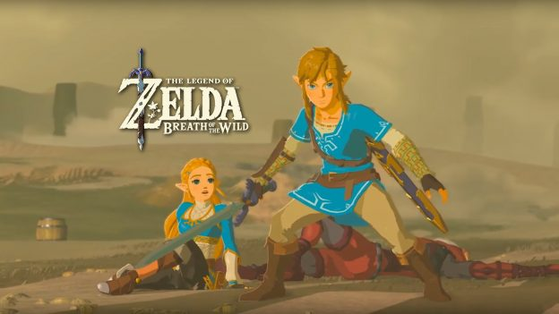
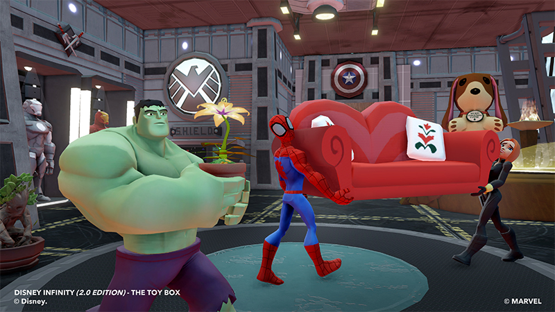
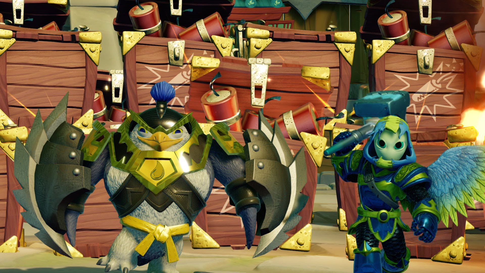
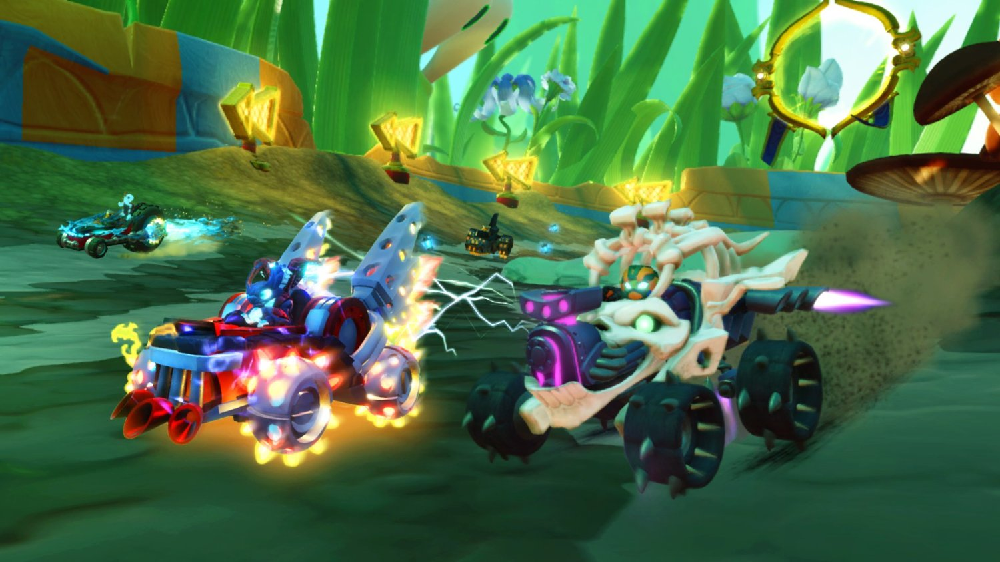
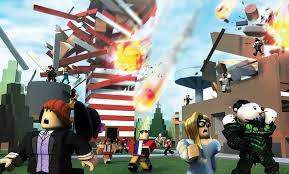

Här är spelen som jag gillar mest på mitt Wiiu
- ZELDA BREATH OF THE WILD.Man kan typ spela 1000 timmar tills amn har klarat ut det. 5av5.

- DISNEY INFINITY.Man kan bygga egna världar vilket leder till massor av kul. 4av5.

- SKYLANDERS IMAGITONS.Jättebra och kul att man kan skapa egna gubbar.Bra story men när man har klarat alla uppdrag blir det ganska tråkigt. 3,95av5.

- JUST DANCE.Svinkul dans spel där man kan dansa hundratals danser mot andra spelare.3,9av5.

- Skylanders Supercharges.Coolt och roligt med alla race.Dock som alla skylanders-spel tråkigt när man har klarat storyn.
>
Här rankar jag mina bästa spel på datorn.
- ROBLOX.Jättekul att spela med kompisar och bygga egna minigames.En sak som är tråkigt är att man bara kan göra 1 minigame utan builders club som kostar några tusen kronor per år. 4,7av5.Jag kanske gör en lista där jag rankar mina fem bästa Roblox spel.

- Terraria.Jättekul 2D spel där man utforskar och dödar monster och bygger ,väldigt likt Minecraft.3,8av5.

- GEEKTYPER.Är ett spel där man låsas att man hackar.3,6av5